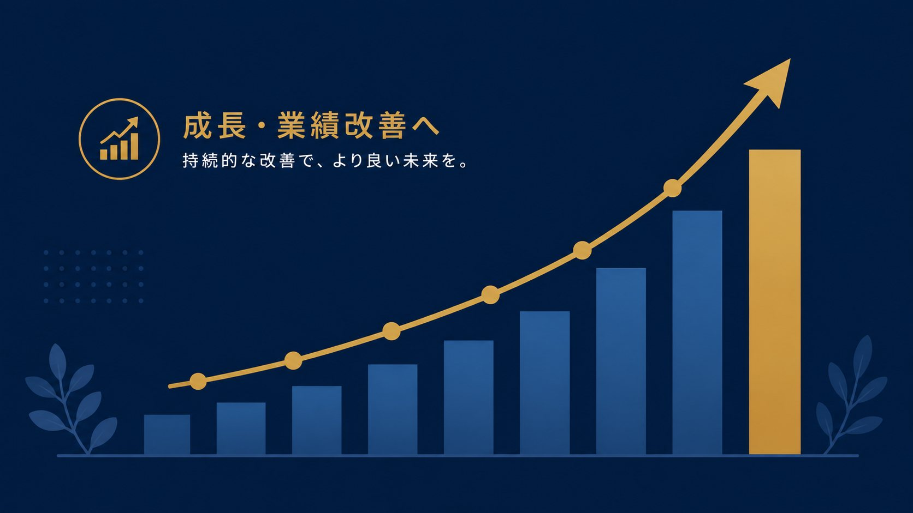
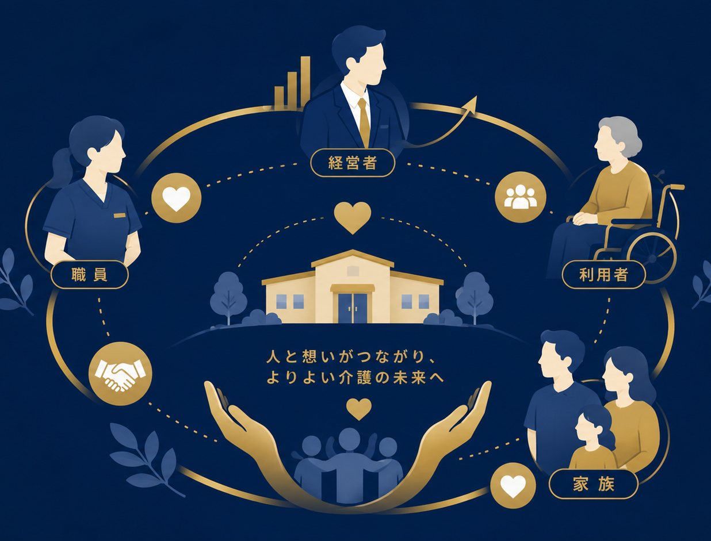

Case Studies
コンサルティング事例
介護経営パートナーズがご支援した施設の、具体的な改善事例をご紹介します。

住宅型有料老人ホーム経営改善
月売上
450万円 → 700万円
営業利益
－150万円 → 100万円
コンサルティング前
月売上450万円、営業利益－150万円。売上を上げるために、自費サービスプランを強化。経費削減のための、職員の出勤日数を削減。その結果、利用料金上昇により利用者離れが相次ぎ、空室が増加し売り上げが低下。職員は働きづらくなり、数名が退職。派遣職員の導入により、経費がさらに増加。
コンサルティング後
月売上700万円、営業利益100万円。お客様の出費額を抑えながら、客単価が上昇。過度な人員削減ではなく、業務効率化により、働きやすさと人件費率の両方を改善。
コンサルティング概要
自費サービスを最小限に抑えながら、介護保険を適用できる介助を中心に、介護スケジュールを再設計。介護保険適用の介助を増やすことで、売上が増加。一方で、今まで自費サービスで提供していたものを保険適用させることで、お客様負担額の低下に成功。慣習で行っていた無駄な業務を洗い出し、その業務を廃止。忙しい時間と、暇な時間を仕分けし、時間帯ごとの人員配置を変更することで、忙しくて大変な時間を緩和。

デイサービス収益改善コンサルティング
稼働率
60％ → 90％
営業利益
－30万円/月 → 80万円/月
デイサービスのコンセプトや、利用者のターゲットが定まっておらず、営業活動も不十分で集客に課題がありました。コンサルティングの中で、既存の利用者からニーズを読み取るとともに、元からある得意分野を伸ばす形でコンセプトを再設計。同時に営業手法も効果のでる仕組みを導入し、1年で稼働率90％に上昇。営業利益も80万円/月にまで大幅アップ。
介護度の高い方多く入居する50床のサービス付き高齢者向け住宅
単月売上
半年で ＋400万円
人件費率
80％超（改善前）
この施設は入居者の介護度が重く、必要な介護が多いため、職員の人数が他施設よりも3割多い体制でした。これに伴い人件費率が80％を超えており、満床稼働にもかかわらず赤字状況が2年間続いていました。対策として、訪問看護サービスを新たに住宅に併設し、看護サービスの保険算定を開始しました。その結果、従来提供していたものの売上計上されていなかった看護サービスが収益化され、単月売上が半年で「400万円上昇」しました。この増収を原資として新たに看護師を採用し、職員体制を充実させることで、医療対応度のより高い施設へのレベルアップを実現しました。